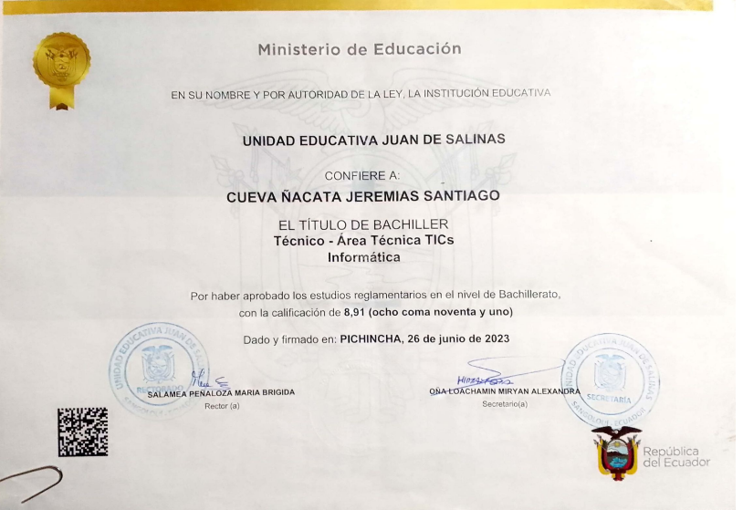
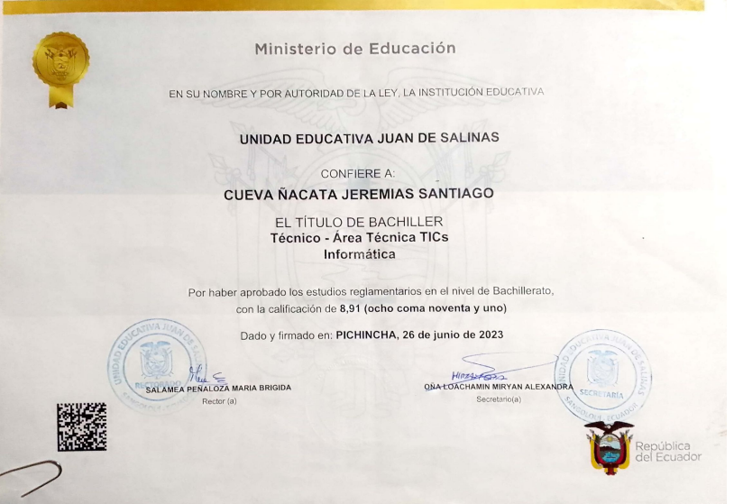

Bachiller Técnico Área TIC's Informática
Unidad Educativa "Juan de Salinas | 2016-2023
Promedio: 8.91/10 | Proyecto de Grado: Ensamblaje de computadores
Unidad Educativa "Juan de Salinas | 2016-2023
Promedio: 8.91/10 | Proyecto de Grado: Ensamblaje de computadores